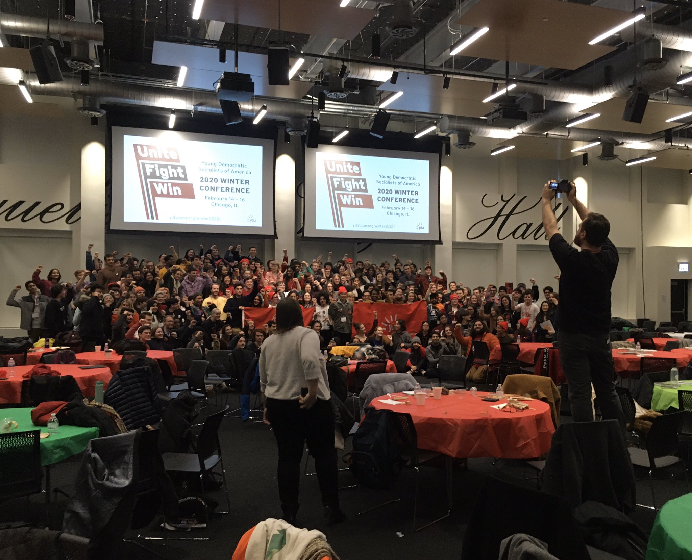
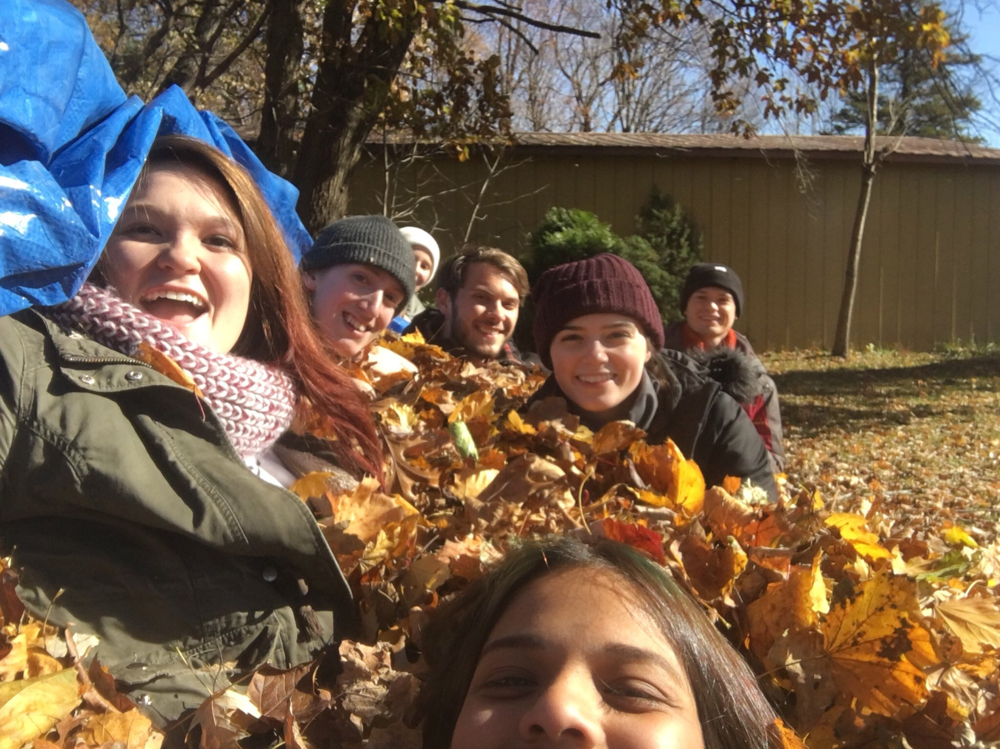
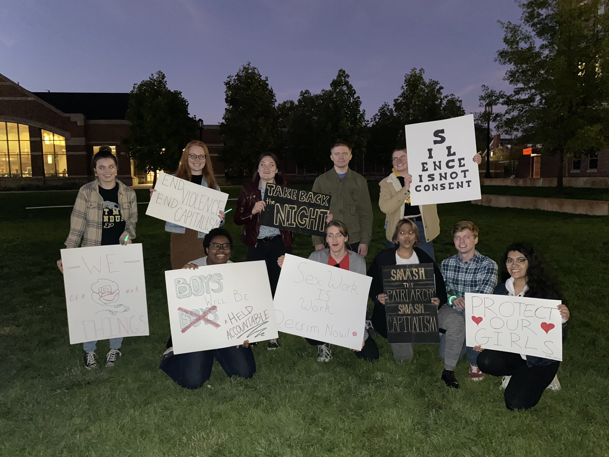
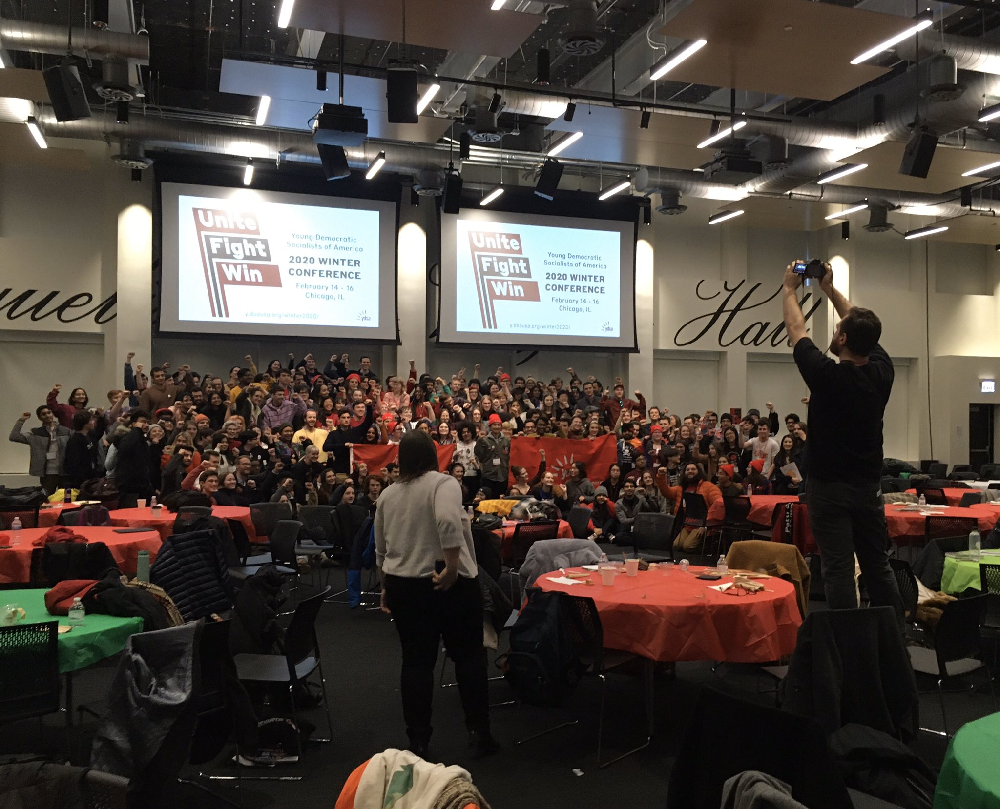
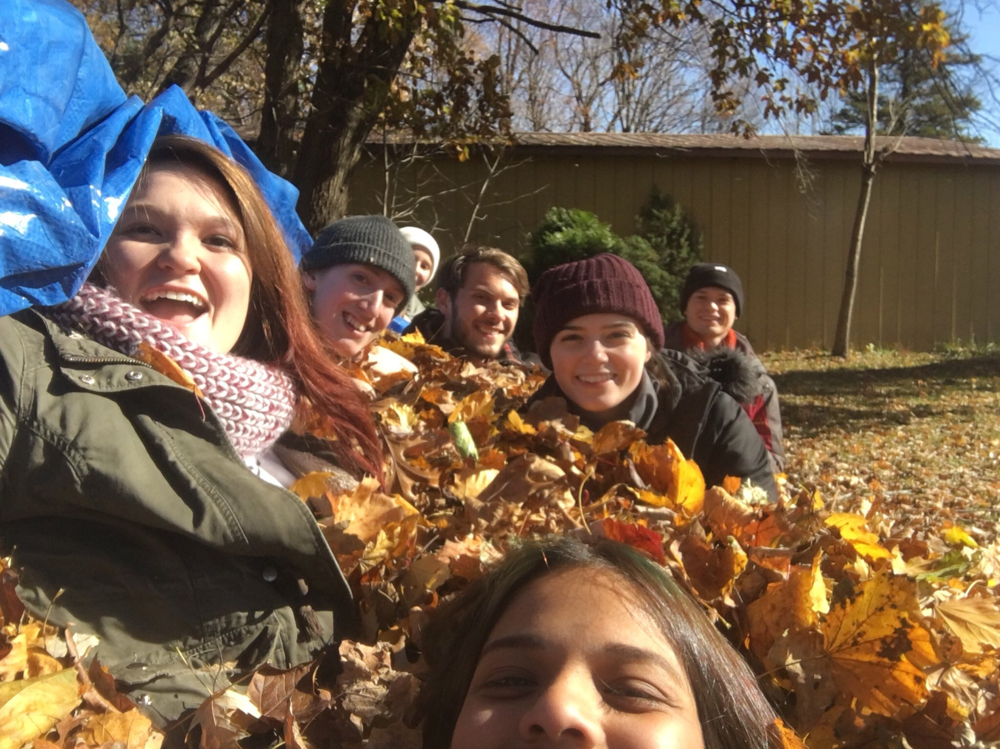
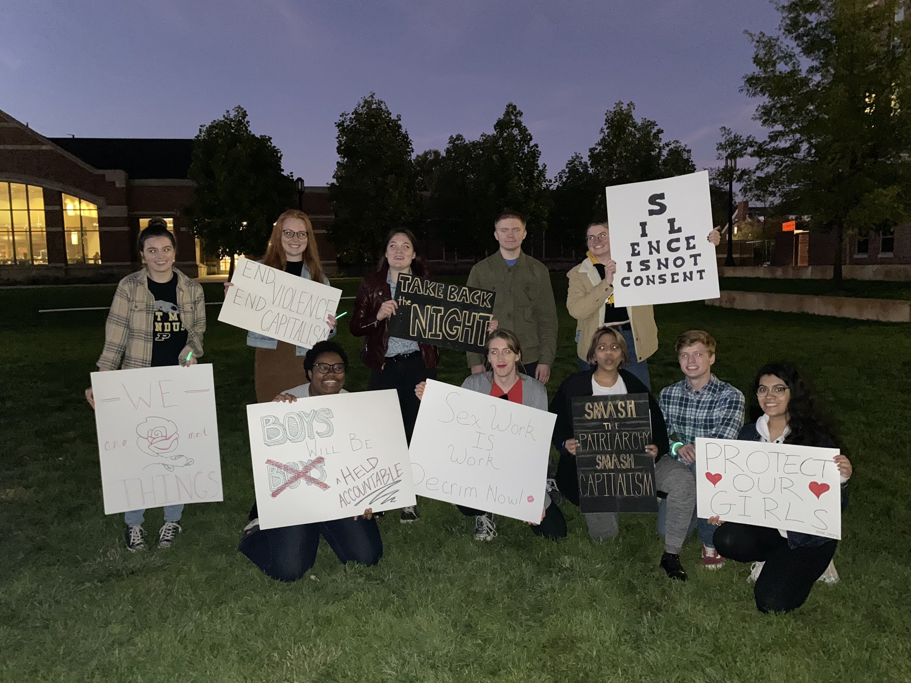

About YDSA
The future is ours to win
Democratic Socialists of America (DSA) is the largest socialist organization in America, and YDSA is the Youth & campus wing of that org. DSA has over 94,000 members, including congresswomen Alexandria Ocasio-Cortez & Rashida Tlaib. As socialists, we believe that:
- The economy should be run democratically by workers
- The liberation of all oppressed peoples requires the abolition of Capitalism
- The US empire must be dismantled globally
- We can win these victories through working class struggle!
 





Executive Committee
Purdue YDSA is lead by a democratically elected Executive Committee, which establishes chapter priorities, organizes meetings, manages funds, and ensures that the chapter grows and develops in healthy ways.
Kat W.
Co-ChairStephen S.
Co-ChairTrevor H.
Vice ChairCass R.
SecretaryClare A.
TreasurerCalendar
Chapter Meetings every other week.
Get Involved
Sign up to get plugged in to our organizing, and follow us on social media to stay updated on our activities.
Sign Up Form